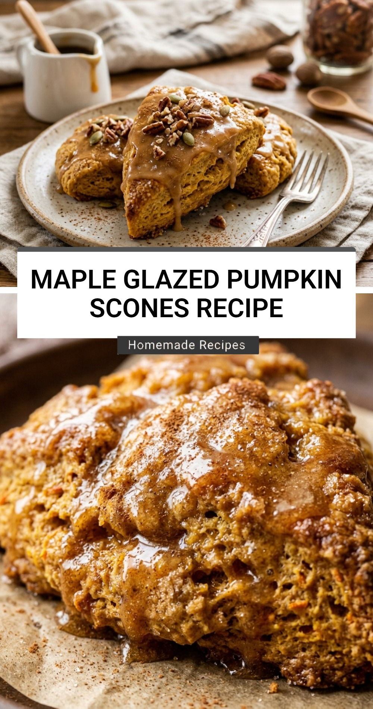

Maple Apple Cider Donuts Recipe

When the crisp autumn air arrives, nothing captures the essence of the season better than the aroma of freshly baked Maple Apple Cider Donuts. These treats combine the tart, concentrated flavor of boiled apple cider with the rich, earthy sweetness of pure maple syrup. Whether you are hosting a fall brunch or looking for a cozy weekend snack, these donuts are guaranteed to become a family favorite.
Recipe Information
Prep Time: 25 minutes
Cook Time: 15 minutes
Total Time: 40 minutes
Servings: 12 donuts
Difficulty Level: Easy
Nutrition Information
Calories per serving: 210 kcal
Protein: 3g
Carbohydrates: 42g
Fat: 4.5g
Fiber: 1g
Sugar: 26g
Sodium: 180mg